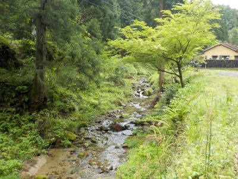
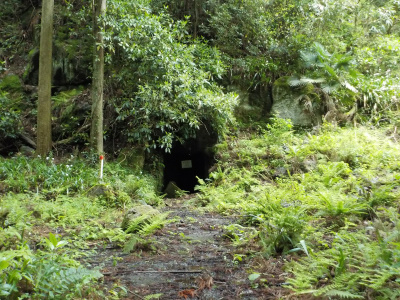
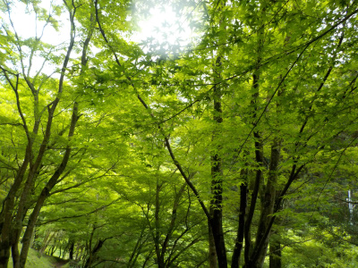
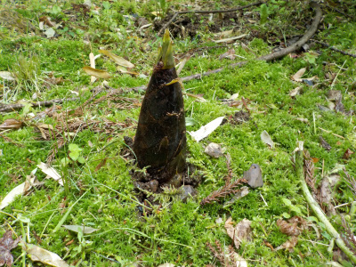
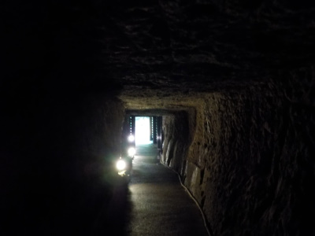
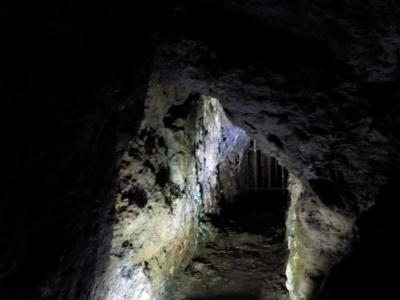
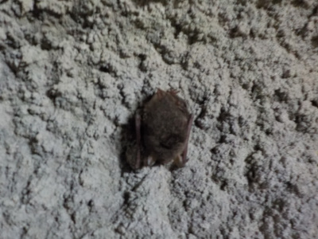
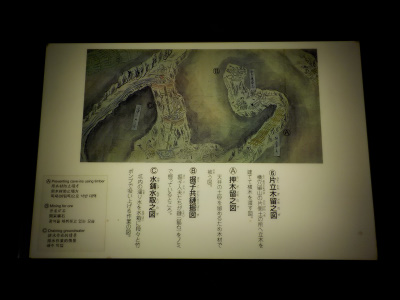
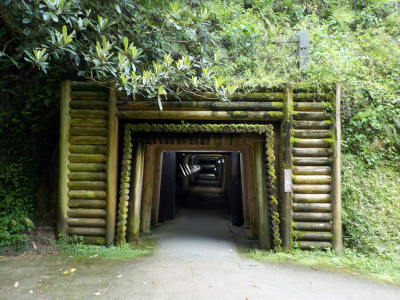
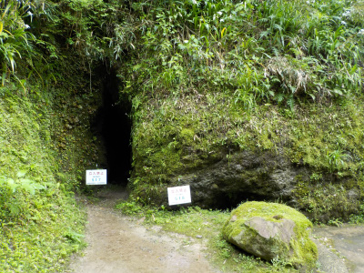

ウオーキングで龍源寺間歩
2019/05/01
世界遺産 石見銀山に観光です。
石見銀山は世界遺産の範囲が広く、海から山まで色々ありますがメインはこの龍源寺間歩ですね。
近くまで車で行けないので自転車か徒歩で行くかの選択になります。（福祉車両は許可があれば車で行けるみたい。）
私は暇で近くの観光地に遊びに来てるだけなので、のんびり徒歩で行くことにしました。
他の観光客さんを見てて思ったんですが、坂道が多いので自転車は体力に自信がない人はアシスト自転車がいいです。坂道が登れなくて自転車を引いてる人がいました。
レンタルサイクルは時間が2時間とか3時間です。無駄に時間が使えないし、駐輪する場所がないと寄り道しにくいです。
なので短時間で帰る人が多いかな。お土産物屋が少ないし、お土産物屋さんにあまり人がいなかったです。
商店のにぎわいがなく寂しいですが、その分のどかで、昔ながらの街並みがキープ出来てるからいいかな。

龍源寺間歩へ行くには、川沿いの道をひたすら登って行きます。

途中、あちこちに小さな坑道がありました。
小さい穴に入って作業するのって怖そうです。

山の中なので自然がいっぱいです。
新緑の紅葉が綺麗でした。秋の紅葉も綺麗なんだろうなー。

竹の子も見れました。
自然観察、森林セラピーもできますね。

龍源寺間歩の様子です。
岩の中を歩く感じでした。

坑道には小さい脇道が多くありました。
小さい穴は通りやすいいようになってないので、洞窟っぽかったです。

途中にコウモリがいました。
ひっくり返ってじっとしてます。寝てるかな。
小さくて、ちょっともふもふしてて可愛かったです。

お勉強用のパネルが設置されていました。
面倒なので読まなかったですが、これを読めば詳しくなれそうな気がしました。
ここに資料があるなら他の資料館・博物館的な施設に行く必要はないかも？って思いました。
あ、でも本物の銀がないか。銀山で銀を見ないのもなんですよね。

出口です。しっかり整備されてます。

小さな坑道も除草してあるので、見やすくなってました。
昔は人が沢山作業してたはずなので、こっちの綺麗な状態が正しいのかな。
歴史的な遺産は正直見てて楽しいって感じにくいですが、アクセスが悪い分移動の自転車や徒歩がレジャーになってると思いました。
見るだけじゃなくて、体験出来て思い出になるみたいな感じかな。
私はアシスト自転車って乗ったことないので、今度レンタルして坂道をスイスイ登ってみたいって思いました。